Visualize the statistics of the clones.
Usage
ClonalStatPlot(
data,
clones = "top(10)",
clone_call = "aa",
chain = "both",
values_by = c("count", "fraction", "n"),
plot_type = c("bar", "box", "violin", "heatmap", "pies", "circos", "chord", "sankey",
"alluvial", "trend", "col"),
group_by = "Sample",
groups = NULL,
subgroup_by = NULL,
subgroups = NULL,
within_subgroup = match.arg(plot_type) != "pies",
relabel = plot_type %in% c("col", "chord", "circos"),
facet_by = NULL,
split_by = NULL,
y = NULL,
xlab = NULL,
ylab = NULL,
...
)Arguments
- data
The product of scRepertoire::combineTCR, scRepertoire::combineTCR, or scRepertoire::combineExpression.
- clones
The specific clones to track. This argument must be provided. If multiple character values are provided, they will be treated as clone IDs. If a single character value is provided with parentheses, it will be evaluated as an expression to select the clones. The clones will be selected per facetting/splitting group. For example, if you have
top(3)will select the top 3 clones in each facetting/splitting group. You can change this behavior by passing thegroup_byargument explicitly. For exampletop(3, group_by = "Sample")will select the top 3 clones in each sample. For expression, see alsoclone_selectors. This can also be a named list of expressions, which need to be quoted. Then basic unit for visualization will be the the clone groups defined by the names of the list, instead of single clones.- clone_call
How to call the clone - VDJC gene (gene), CDR3 nucleotide (nt), CDR3 amino acid (aa), VDJC gene + CDR3 nucleotide (strict) or a custom variable in the data
- chain
indicate if both or a specific chain should be used - e.g. "both", "TRA", "TRG", "IGH", "IGL"
- values_by
The variable to use for the values of the clones. Default is "count", which represents the number of cells in each clone. "fraction" can also be used to represent the fraction of cells in each clone out of the total cells in the group. "n" can be used to represent the number of cells in each clone, same as "count".
- plot_type
The type of plot to use. Default is "bar". Possible values are:
"bar" - bar plot showing the total size of the selected clones in each group.
"box" - box plot showing the distribution of the clone sizes in each group.
"violin" - violin plot showing the distribution of the clone sizes in each group.
"heatmap" - heatmap showing the clone sizes in each group.
"pies" - heatmap with pie charts showing the clone sizes and subgroup compositions in each group. Requires
subgroup_byto be provided."sankey" - sankey plot showing the dynamics of the clones between groups. The clone groups will be defined by the
clonesargument. The flows will be colored by the clone groups."alluvial" - same as "sankey".
"trend" - line plot showing the trend of the clone sizes in each group. The clone groups will be defined by the
clonesargument. The lines will be colored by the clone groups."col" - column plot showing the size of the clones in each group. Note that for "col", the plot will be faceted by the groups, so "facet_by" is not supported. Please use "split_by" instead if you want to split the plot by another variable.
- group_by
The column name in the meta data to group the cells. Default: "Sample"
- groups
The groups to include in the plot. Default is NULL. If NULL, all the groups in
group_bywill be included.- subgroup_by
The column name in the meta data to subgroup the nodes (group nodes on each
x). Default: NULL. This argument is only supported for "sankey"/"alluvial" plot. If NULL, the nodes will be grouped/colored by the clones- subgroups
The subgroups to include in the plot. Default is NULL.
- within_subgroup
Whether to select the clones within each subgroup.
- relabel
Whether to relabel the clones. Default is FALSE. The clone ids, especially using CDR3 sequences, can be long and hard to read. If TRUE, the clones will be relabeled as "clone1", "clone2", etc. (ordered by the descending clone sizes) Only works for visualizations for single clones.
- facet_by
The column name in the meta data to facet the plots. Default: NULL. This argument is not supported and will raise an error if provided.
- split_by
The column name in the meta data to split the plots. Default: NULL
- y
The y-axis variable to use for the plot. Default is NULL.
For
barplot, Either "TotalSize" or "Count" can be used, representing the total size (# cells) of the selected clones or the number of selected clones, respectively.
- xlab
The x-axis label. Default is NULL.
- ylab
The y-axis label. Default is NULL.
- ...
Other arguments passed to the specific plot function.
For
barplot, seeplotthis::BarPlot().For
trendplot, seeplotthis::TrendPlot().For
sankeyplot, seeplotthis::SankeyPlot().
Examples
# \donttest{
set.seed(8525)
data(contig_list, package = "scRepertoire")
data <- scRepertoire::combineTCR(contig_list,
samples = c("P17B", "P17L", "P18B", "P18L", "P19B","P19L", "P20B", "P20L"))
data <- scRepertoire::addVariable(data,
variable.name = "Type",
variables = rep(c("B", "L"), 4)
)
data <- scRepertoire::addVariable(data,
variable.name = "Subject",
variables = rep(c("P17", "P18", "P19", "P20"), each = 2)
)
# add a fake variable (e.g. cell type from scRNA-seq)
data <- lapply(data, function(x) {
x$CellType <- sample(c("CD4", "CD8", "B", "NK"), nrow(x), replace = TRUE)
return(x)
})
# showing the top 10 clones (by default)
ClonalStatPlot(data, group_by = "Sample", title = "Top 10 clones")
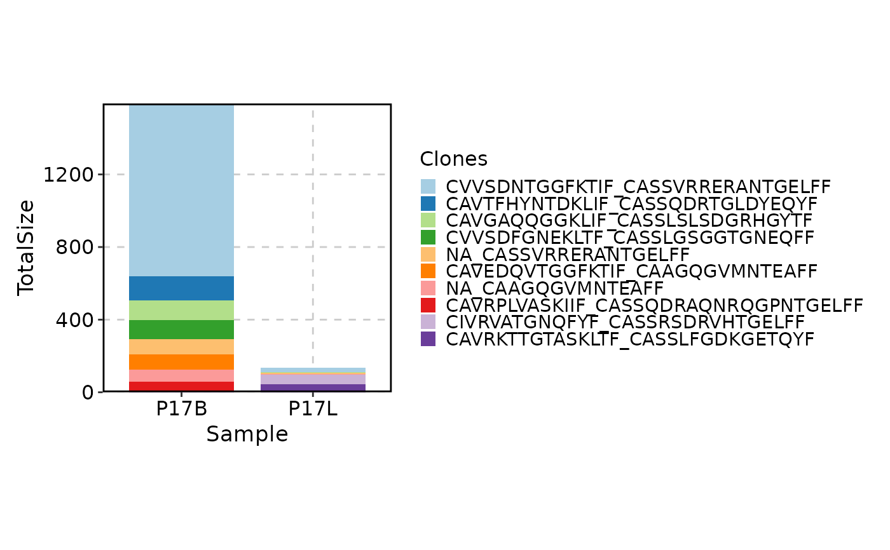
# showing the top 10 clones in P17B and in P17L, with the clones relabeled
ClonalStatPlot(data, clones = "top(10, group_by = 'Sample')", group_by = "Sample",
groups = c("P17B", "P17L"), relabel = TRUE, values_by = "fraction",
title = "Top 10 clones in P17B and in P17L (relabelled)")
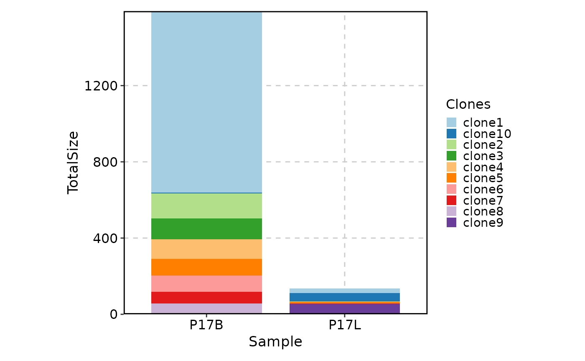
# showing the top 10 clones in each sample using violin plots
ClonalStatPlot(data, group_by = "Sample",
plot_type = "violin", clones = "top(10, group_by = 'Sample')",
subgroup_by = "CellType", subgroups = c("CD4", "CD8"), add_box = TRUE,
comparison = TRUE, title = "Violin plots showing top 10 clones in each sample")
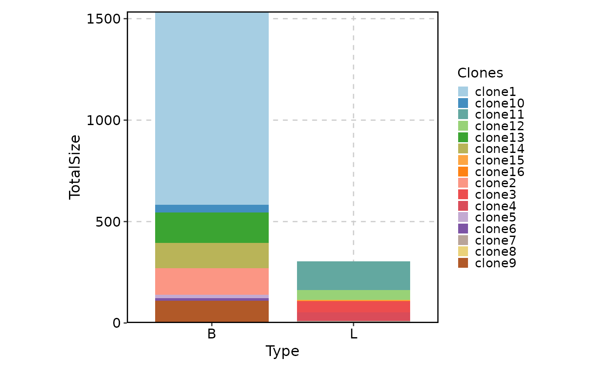
# showing selected clones in P17B and P17L
ClonalStatPlot(data, group_by = "Sample", groups = c("P17B", "P17L"),
clones = c("CVVSDNTGGFKTIF_CASSVRRERANTGELFF", "NA_CASSVRRERANTGELFF"),
title = "Selected clones in P17B and P17L")
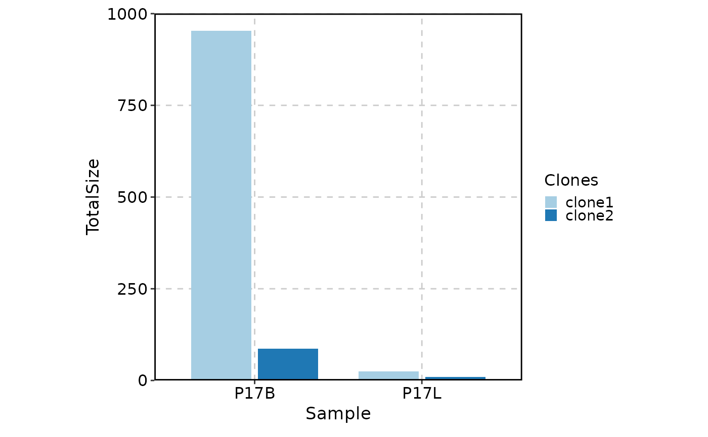
# facetting is supported, note that selection of clones is done within each facet
ClonalStatPlot(data, group_by = "Subject", groups = c("P17", "P19"),
facet_by = "Type", relabel = TRUE,
title = "Top 10 clones in Type B and L for P17 and P19")
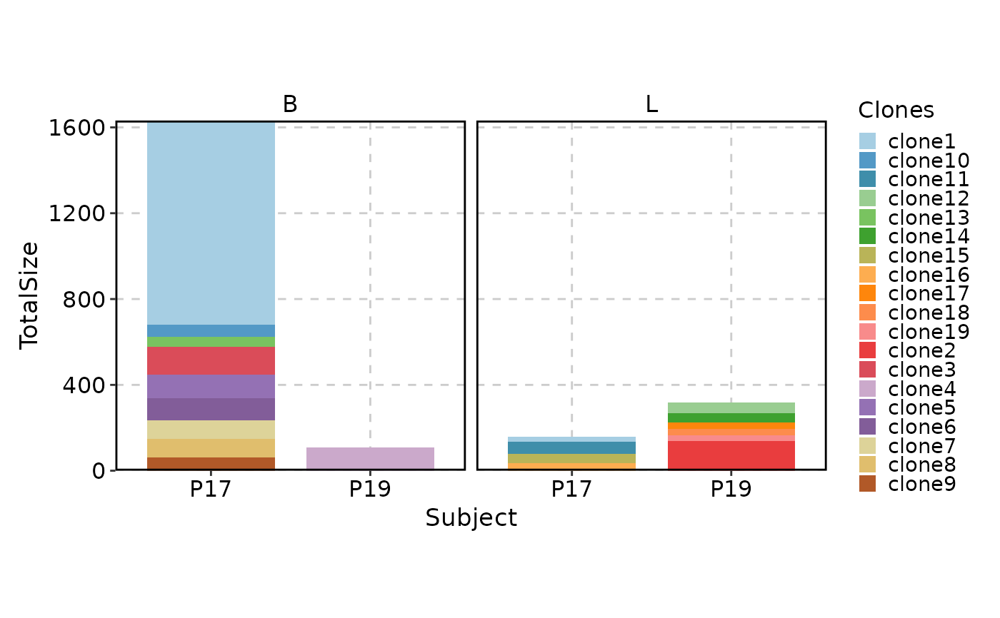
# as well as splitting
ClonalStatPlot(data, group_by = "Subject", groups = c("P17", "P19"),
split_by = "Type", relabel = TRUE)
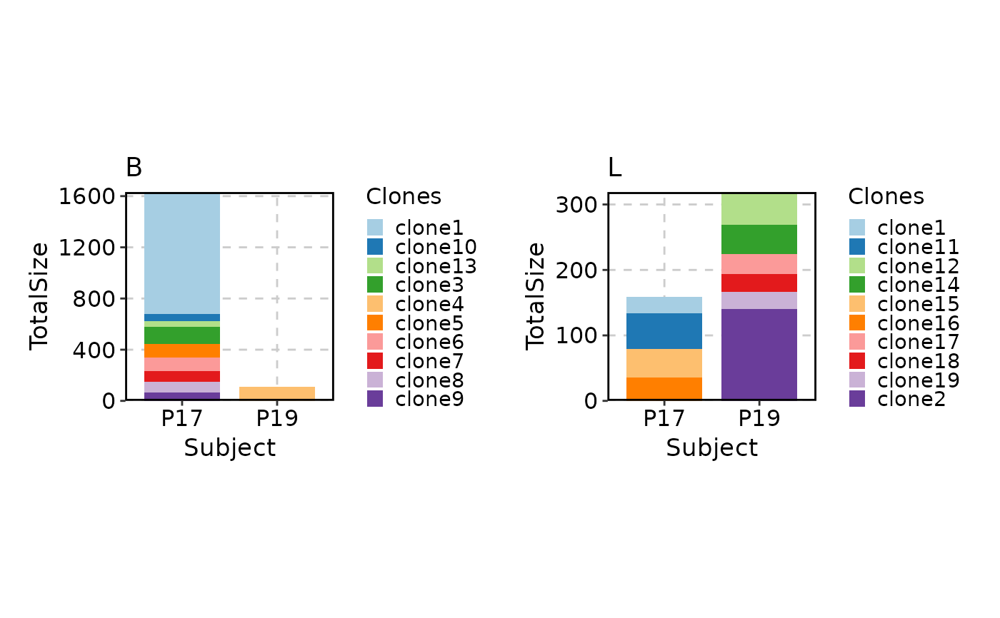
# showing top 10 shared clones between P17B and P17L
ClonalStatPlot(data, group_by = "Sample", groups = c("P17B", "P17L"),
clones = "shared(P17B, P17L, group_by = 'Sample', top = 10)", relabel = TRUE,
title = "Shared clones between P17B and P17L")
# showing clones larger than 10 in P17L and ordered by the clone size in P17L descendingly
ClonalStatPlot(data, group_by = "Sample", groups = c("P17B", "P17L"),
clones = "sel(P17B > 10, group_by = 'Sample', top = 5, order = desc(P17B))",
relabel = TRUE, position = "stack", title = "Top 5 clones larger than 10 in P17B")
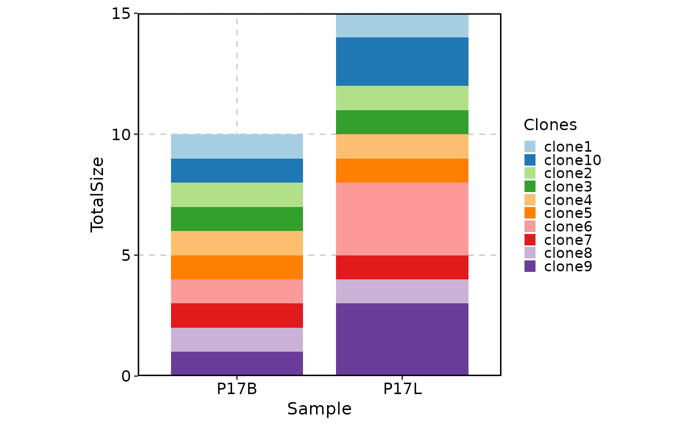
# using trend plot
ClonalStatPlot(data, group_by = "Sample", groups = c("P17B", "P17L"),
clones = "sel(P17L > 10 & P17B > 0, group_by = 'Sample')", relabel = TRUE,
plot_type = "trend", title = "Clones larger than 10 in P17L and existing in P17B")
# using heatmap
ClonalStatPlot(data, group_by = "Sample", groups = c("P17B", "P17L"),
clones = "sel(P17L > 10 & P17B > 0, group_by = 'Sample')", relabel = TRUE,
plot_type = "heatmap", show_row_names = TRUE, show_column_names = TRUE,
title = "Clones larger than 10 in P17L and existing in P17B (heatmap)")
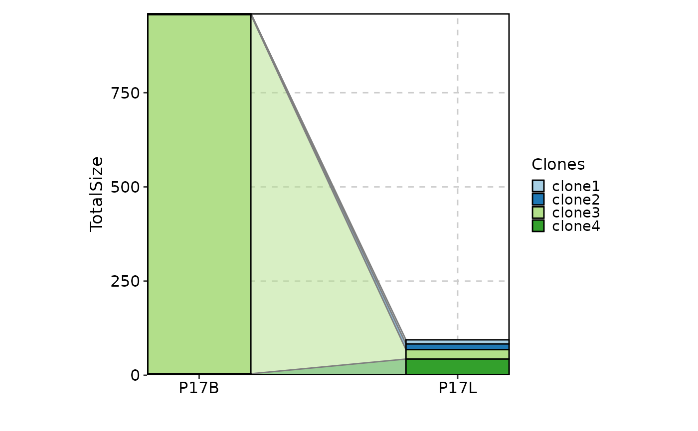
# using pies with subgroups for groups of clones
ClonalStatPlot(data, group_by = "Sample", groups = c("P17B", "P17L"),
clones = list(
ExpandedClonesInP17L = "sel(P17L > 20, group_by = 'Sample')",
ExpandedClonesInP17B = "sel(P17B > 20, group_by = 'Sample')"
), subgroup_by = "CellType", pie_size = sqrt,
plot_type = "pies", show_row_names = TRUE, show_column_names = TRUE,
title = "Clones larger than 20 in P17L and P17B (pies with subgroups by CellType)")
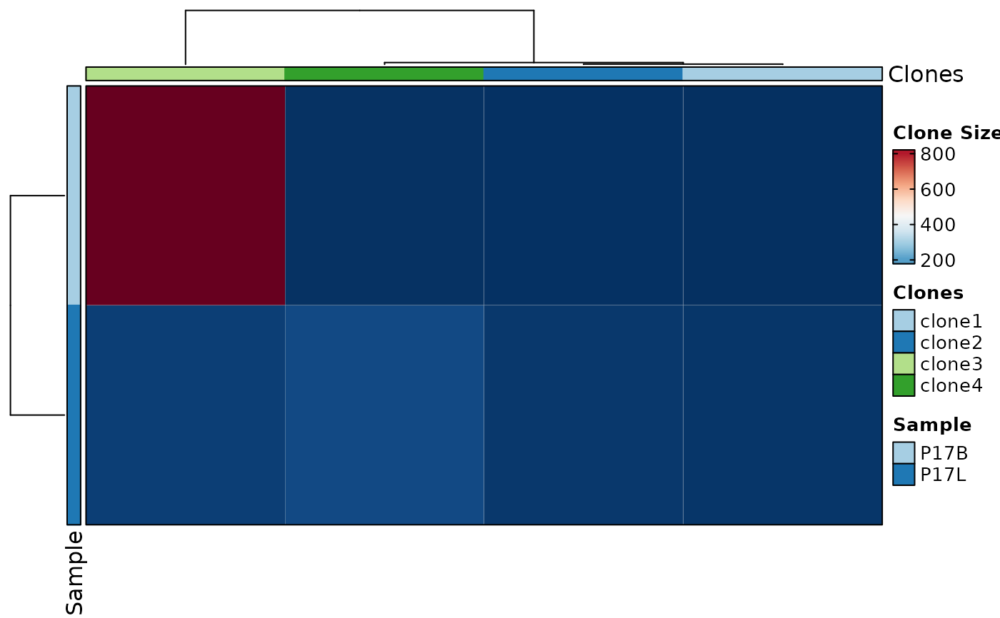
# using heatmap with subgroups for groups of clones
ClonalStatPlot(data, group_by = "Sample", groups = c("P17B", "P17L"),
clones = list(
ExpandedClonesInP17L = "sel(P17L > 20, group_by = 'Sample')",
ExpandedClonesInP17B = "sel(P17B > 20, group_by = 'Sample')"
), subgroup_by = "CellType", pie_size = sqrt, within_subgroup = FALSE,
plot_type = "heatmap", show_row_names = TRUE, show_column_names = TRUE,
title = "Clones larger than 20 in P17L and P17B (pies with subgroups by CellType)")
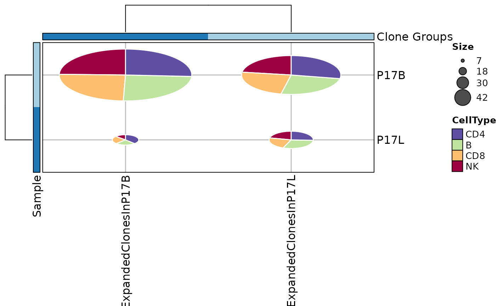
# using clone groups and showing dynamics using sankey plot
ClonalStatPlot(data, group_by = "Sample", groups = c("P17B", "P17L"),
clones = list(
"Hyper-expanded clones in P17B" = "sel(P17B > 10, group_by = 'Sample')",
"Hyper-expanded clones in P17L" = "sel(P17L > 10, group_by = 'Sample')"
), plot_type = "sankey", title = "Hyper-expanded clones in P17B and P17L")
 # col plot
ClonalStatPlot(data, clones = "top(5, group_by = 'Sample')", plot_type = "col",
title = "Top 5 clones in each sample (col plot)")
ClonalStatPlot(data, clones = "top(5, group_by = 'Sample')", plot_type = "col",
values_by = "fraction", facet_scale = "free",
title = "Top 5 clones in each sample (col plot, showing fraction)")
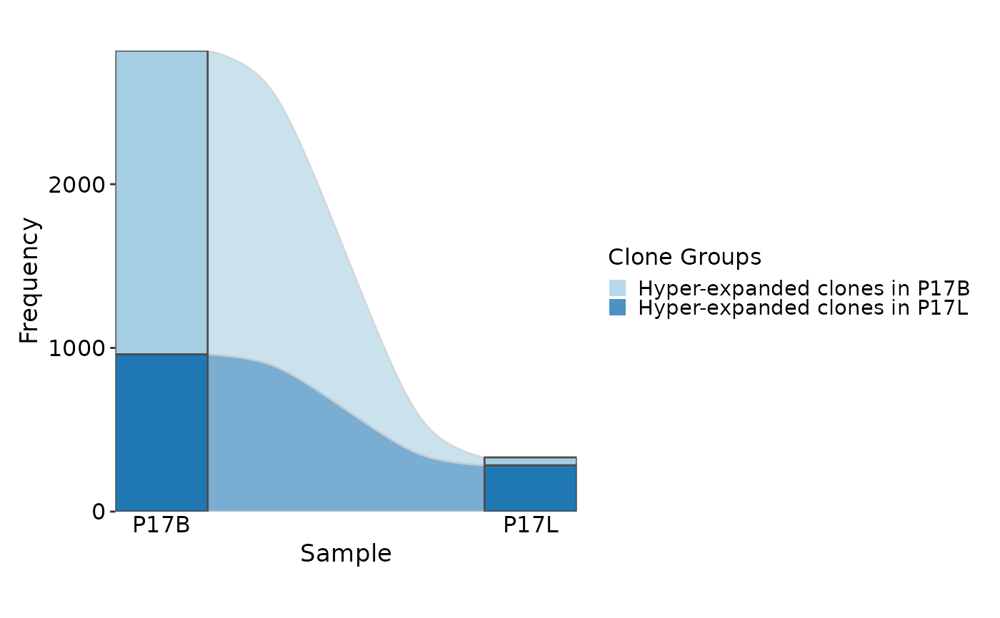
ClonalStatPlot(data, plot_type = "col", groups = c("P17B", "P17L"),
facet_ncol = 1, legend.position = "right",
relabel = TRUE, fill_by = ".Clones", fill_name = "Clones")
# col plot
ClonalStatPlot(data, clones = "top(5, group_by = 'Sample')", plot_type = "col",
title = "Top 5 clones in each sample (col plot)")
ClonalStatPlot(data, clones = "top(5, group_by = 'Sample')", plot_type = "col",
values_by = "fraction", facet_scale = "free",
title = "Top 5 clones in each sample (col plot, showing fraction)")
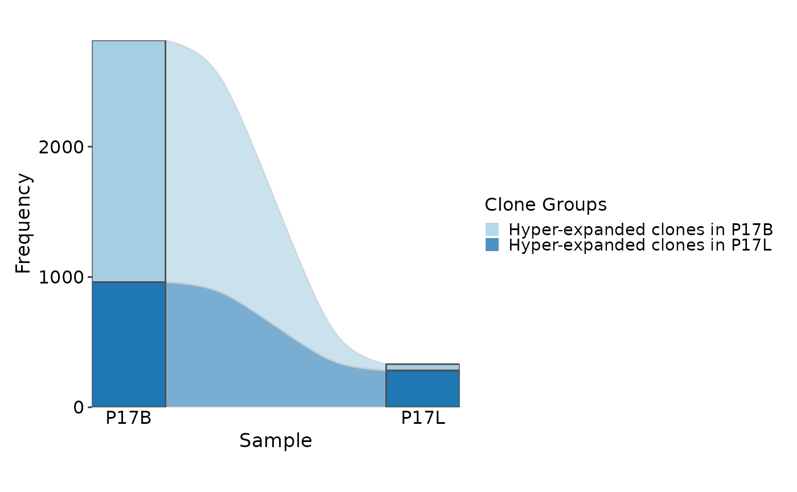
ClonalStatPlot(data, plot_type = "col", groups = c("P17B", "P17L"),
facet_ncol = 1, legend.position = "right",
relabel = TRUE, fill_by = ".Clones", fill_name = "Clones")
 # }
# }